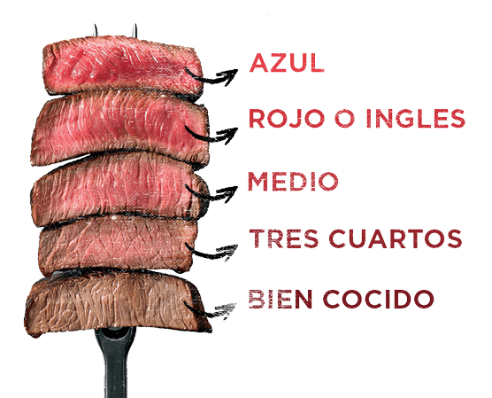

Cortes de Carne
Los cortes de carne son las diferentes porciones que se obtienen tras el despiece de un animal destinado al consumo humano y varían de una región a otra. Ejemplos de cortes son la chuleta, el entrecot, el lomo o el jamón. El despiece y la denominación de las partes no solo dependen de la especie del animal sino también del país. Un mismo animal puede ser descuartizado y despiezado de forma diferente según la costumbre gastronómica y según las normativas alimentarias de cada país.
Terminos de la carne
Partes del Cerdo
Las mejores partes del cerdo ibérico o, al menos, las que más se comen son las costillas, la panceta, el lomo, las patas con las que se hacen jamones y paletillas y el morro, pero vamos a explicarlas una a una. ¡Vamos allá! Presa Si te preguntas qué parte del cerdo es la presa, te lo vamos a contar. La presa ibérica es una parte que se encuentra junto a la paleta, es la parte superior y delantera del lomo. De cada animal se obtienen dos piezas de un medio kilo aproximadamente. Es redondeada y se recomienda cortarla en lonchasLoncha de jamón - Glosario Enrique Tomás EN LAS OFICINAS DE ENRIQUE TOMÁS CUANDO ALGUIEN DICE LA PAL... .Si es presa ibérica tiene bastante grasa intermuscular, de ahí que sea tan jugosa y sabrosa. Lo ideal es hacerla a la brasa o a la plancha, adobada o al natural con especias al gusto, como cúrcuma, tomillo, pimienta negra, etc. Para notar bien los matices de la carne, cuanto más simple mejor.
Terminos de la carne